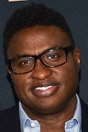
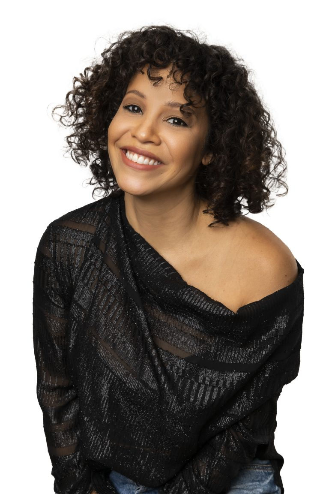

Anika Noni Rose é uma atriz e cantora estadunidense, mais conhecida do público por seu trabalho no filme Dreamgirls e dublando a Princesa Disney Tiana
principe naveen
Bruno Campos é um advogado e ex-ator brasileiro, mais conhecido por interpretar Quentin Costa no seriado Nip/Tuck e ser a voz do Príncipe Naveen na animação A Princesa e o Sapo
homem das sombras
Keith David Williams, mais conhecido por Keith David, é um ator e dublador norte-americano
ray
James Jonah "Jim" Cummings é um dublador estadunidense. Foi nomeado duas vezes para o Annie Award: em 1995, por emprestar a voz ao personagem Mister Bumpy na série animada Mister Bumpy
paizão
Jonathan Stephen Goodman, conhecido artisticamente como John Goodman, é um ator e dublador norte-americano, célebre por sua atuação como Dan Conner no seriado Roseanne
mama odie
Jenifer Lewis é uma atriz e cantora estadunidense Nascimento:25 de janeiro de 1957 (idade 67 anos)
charlotte
Jennifer Cody é uma atriz americana, nascida em Nova York. Mias conhecida pela sua participação no filme A Princesa e o Sapo em 2009.
louis

Traduzido de inglês-Michael-Leon Wooley é um ator americano. Wooley foi a voz de Louis, o Jacaré, no longa-metragem de animação da Disney indicado ao Oscar, A Princesa e o Sapo
dubladores
tiana

Claudja de Oliveira Gomes (Rio de Janeiro, 10 de janeiro de 1977), mais conhecida como Claudja ou ainda Kacau Gomes, é uma atriz, dubladora e cantora brasileira.
principe naveen
Rodrigo Lombardi (São Paulo, 15 de outubro de 1976) é um ator e dublador brasileiro. Conhecido pela versatilidade em diversas áreas do entretenimento
homem das sombras
Sérgio Fortuna é um locutor, ator, dublador, cantor, diretor musical e músico brasileiro e é conhecido por ser o locutor do estúdio Wan Marc
ray
Márcio de Freitas Simões (Rio de Janeiro, 16 de março de 1962) é um ator, cantor, dublador e diretor de dublagem brasileiro
paizão
Reinaldo Paiva Pimenta (Rio de Janeiro, 28 de setembro de 1947 - 5 de outubro de 2023) foi um ator, dublador, radialista, advogado, professor e escritor brasileiro.
mama odie
Selma Lopes é uma atriz, cantora, professora de interpretação e dubladora brasileira, conhecida como a rainha da dublagem.
charlotte
Iara Maria Maciel Riça (Rio de Janeiro, 10 de março de 1965 - Rio de Janeiro, 27 de abril de 2021) foi uma atriz e dubladora brasileira.
louis
Mauro Ramos de Oliveira (Poços de Caldas, 30 de agosto de 1930 — Poços de Caldas, 18 de setembro de 2002), foi um futebolista brasileiro que atuou como zagueiro
personagens
tiana
Tiana é a protagonista do filme
principe naveen
Príncipe Naveen é o deuteragonista do filme
homem das sombras
Dr. Facilier, também conhecido como O Homem da Sombra, é o antagonista principal do filme
ray
o vagalume Ray que ama Evangelline
paizão
La Bouff é o pai de Charlotte
mama odie
Mama Odie é uma gentilmente velha sacerdotisa de vodu que vive nas profundezas dos pântanos da Louisiana
charlotte
uma bela e extravagante sulista, a filha de rico Eli La Bouff e melhor amiga de Tiana